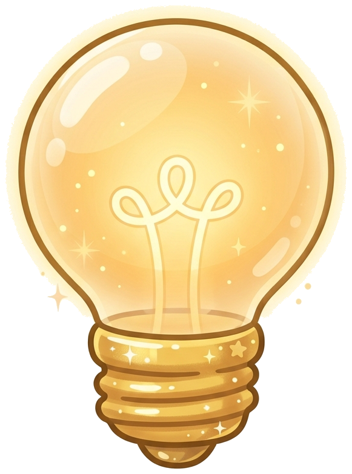
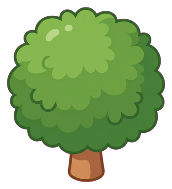
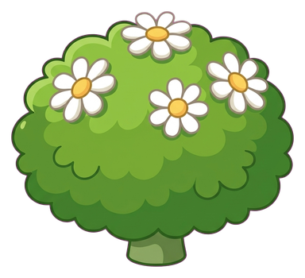
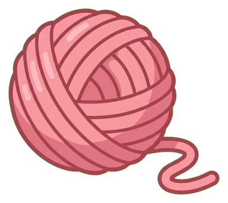

Conecte caminhos.
Ajude gatinhos fofos.
O clássico Nonogram reinventado com trilhas de trem e jornadas de resgate. Sem cronômetro, sem vidas limitadas e 100% dedutivo.

Dedução Pura


Como Funciona o Nonogram de Caminhos
Esqueça os quadrados abstratos em preto e branco. Aqui, cada número revela trilhos, pontes e curvas em direção à vitória.
1. Analise as Pistas
Os números no topo e ao lado da tela indicam exatamente quantos blocos de trilho existem em cada linha ou coluna.
2. Conecte a Rota
Marque os blocos com o trilho de madeira e cruze com um 'X' as áreas vazias. Os trilhos formam caminhos orgânicos.
3. Celebre com o Mascote
Ao fechar a lógica correta, veja o gatinho correr até o novelo de lã em uma festa com confetes e recompensas!
Tudo o que você precisa saber
Tire suas dúvidas sobre o lançamento e a jogabilidade do Paws & Paths.
O jogo funciona sem internet (offline)?
Sim! O Paws & Paths é 100% jogável offline. Todo o seu progresso de fases e estrelas fica salvo de forma segura no próprio dispositivo.
O que acontece se eu ficar travado em um puzzle?
Você pode usar o sistema de Dicas amigáveis usando as Sementes obtidas ao completar fases anteriores. A dica revela uma célula lógica sem estragar o desafio.
Existem vidas ou limite de tempo?
Não. Acreditamos na filosofia "cozy": você nunca perderá vidas, não sofrerá penalidades e pode reiniciar ou desfazer movimentos a qualquer momento.
Como falar com o suporte ou sugerir novas fases?
Você pode entrar em contato conosco a qualquer momento através da nossa Página de Suporte ou pelo e-mail oficial.